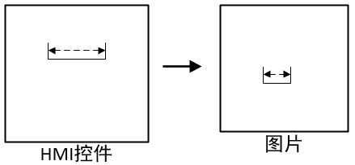

|
类型 |
坐标转换 |
|
描述 |
将界面HMI控件坐标系下的的长度转换到图像坐标系下的长度，转换过程使用了锁存信息，需要锁存信息正确，用于界面交互时的相对值的变换 注意：指令应用于长度数据，仅作缩放处理，请注意与坐标数据区分  |
|
语法 |
imgLen = ZV_LENTOIMG(latchId,len)
参数： latchId：锁存通道号 len：HMI控件坐标系下的长度 返回值： imgLen：转换后图像坐标系下的长度 |
|
适用控制器 |
支持ZV功能或者5系列以上的控制器 |
|
例子 |
ZVOBJECT img ZV_LATCHSETSIZE(0,553,155) '设置锁存0通道的宽高：553*155 ZV_ImgRead(img,"logo.png",0) '以原图像格式读取图像 ZV_LATCH(img,0)
LOCAL l_length l_length = ZV_LENTOIMG(0,10) '将锁存通道0对应的控件坐标下的长度转换到图像坐标下的长度 |